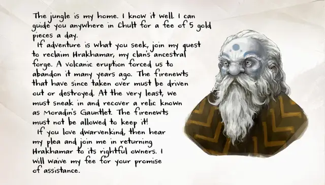

Мушариб
Musharib
Средний Гуманоид (Дварф-альбинос), законно-добрый, именной НИП

Класс Доспеха 13 (шкурный доспех)
Хиты 30 (4к8 + 12)
Скорость 25 футов
| мод | спас | ||
|---|---|---|---|
| СИЛ | 13 | +1 | +1 |
| ЛОВ | 13 | +1 | +1 |
| ТЕЛ | 17 | +3 | +3 |
| мод | спас | ||
|---|---|---|---|
| ИНТ | 12 | +1 | +1 |
| МДР | 14 | +2 | +2 |
| ХАР | 11 | +0 | +0 |
Навыки Восприятие +4, Выживание +4, Скрытность +3
Сопротивление урону яд
Чувства тёмное зрение 60 футов, пассивное Восприятие 14
Языки Общий, Дварфийский
Опасность 1 (200 опыта)
Бонус мастерства +2
Особенности
Дварфская устойчивость. . Мушариб совершает с преимуществом спасброски от яда.
Врождённое колдовство. Базовой характеристикой Мушариба является Мудрость. Он может накладывать следующие заклинания, не нуждаясь в материальных компонентах:
• 1/день каждое: метка охотника [hunter’s mark], прыжок [jump], бесследное передвижение [pass without trace], разговор с животными [speak with animals], разговор с растениями [speak with plants].
Действия
Ручной топор. Рукопашная или дальнобойная атака оружием: +3 к попаданию, досягаемость 5 футов или дистанция 20/60 футов, одна цель. Попадание: 4 (1к6 + 1) рубящего урона.
Описание
Мушариб с радостью послужит проводником вне порта Нянзару, но он также втайне ищет достаточно умелых и выносливых искателей приключений, чтобы помочь ему вернуть Храхамар, или по крайней мере прокрасться в его сокровищницу и вынести оттуда Перчатку Морадина – дварфийскую реликвию. Если в группе есть дварфы, Мушариб обратится к ним и будет давить на их расовые узы, чтобы уговорить помочь ему вернуть кузницу предков его клана. Обычно он адресует все вопросы и ответы дварфам группы, если нет возможности избежать разговора с кем-либо ещё.
Рост Мушариба достигает 4 фута 5 дюймов, вес – 140 фунтов. Он использует деревянный молот под названием Череполом. Его доспех сделан из лопаточных костей динозавров и покрыт царапинами и рубцами от оружия, когтей и зубов.